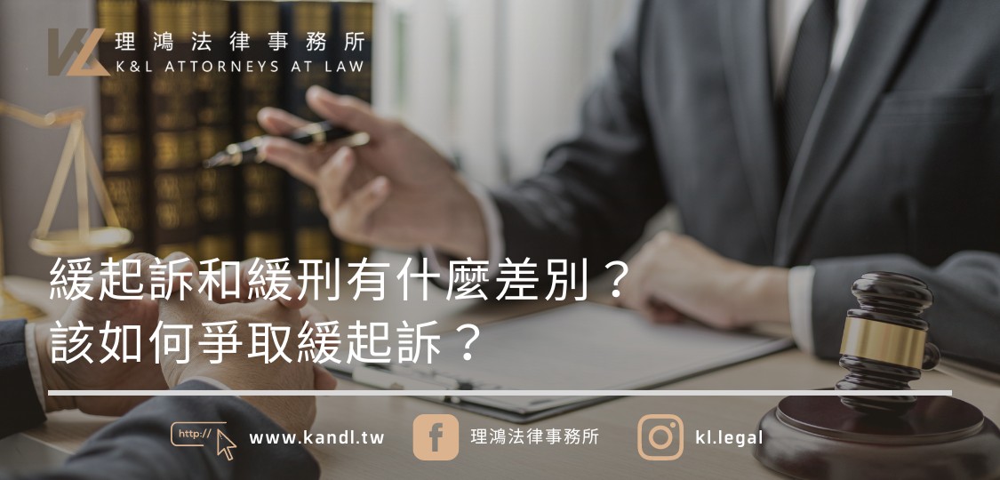

2024.04.15
緩起訴和緩刑有什麼差別？要如何爭取緩起訴？

文 / 郭柏鴻律師
最近許多人都從新聞中聽到「緩起訴」這個名詞，但究竟什麼是緩起訴？和也很常聽到的「緩刑」有什麼不同？緩起訴就等於輕縱嗎？要怎麼樣才能讓檢察官作出緩起訴處分呢？
什麼是「緩起訴」
首先，絕大多數的刑事案件，都必須先經過偵查程序，當檢察官依照偵查所得到的證據，認為被告確實有犯罪嫌疑時，才會提起公訴。檢察官起訴後，案件會進到法院審理，由法官認定被告是否確實構成犯罪，並作出判決。
所謂的緩起訴，依字面上的意思，就是檢察官雖然認為被告有犯罪嫌疑，但「暫緩」提起公訴。緩起訴制度的目的，是在給予被告懲戒與改過的機會，幫助被告重返正常生活，也能降低司法系統的運作負擔。
依刑事訴訟法第 253-1 條規定，如果被告所犯的是死刑、無期徒刑或最輕本刑 3 年以上有期徒刑「以外」的罪，檢察官在參酌刑法第 57 條所列的事項，以及公共利益的維護之後，若認為給予緩起訴比較適當，就可以作成緩起訴處分。
緩起訴的附帶條件
但緩起訴的目的，還是要讓被告有知錯、改過的機會，所以依刑事訴訟法第 253-2 條的規定，檢察官給予被告緩起訴處分時，還可以附帶下列事項：
- 1. 向被害人道歉。
- 2. 立悔過書。
- 3. 向被害人支付相當金額的賠償。
- 4. 向公庫支付一定金額，並可以提撥一定比率補助公益團體或地方自治團體。
- 5. 向指定的機構或團體提供 40 至 240 小時的義務勞務。
- 6. 完成戒癮治療、精神治療、心理治療、心理諮商、心理輔導或其他適當的處遇措施。
- 7. 保護被害人安全的必要命令。
- 8. 預防再犯所為的必要命令。
此外，緩起訴處分會附有 1 年以上 3 年以下的「緩起訴期間」，如果在緩起訴期間內，被告有下列行為，緩起訴就可能被撤銷：
- 1. 違反上述的緩起訴附帶事項。
- 2. 於緩起訴期間內故意更犯有期徒刑以上刑之罪，經檢察官提起公訴者。
- 3. 緩起訴前，因故意犯其他罪，而在緩起訴期間內受有期徒刑以上刑之宣告者。
與緩刑的差別
緩起訴是由檢察官決定「暫緩起訴」。緩刑則是案件已經起訴進到法院、經過法官審理後，法官雖然判決被告有罪並處以刑罰，但可以「暫緩執行」，只要被告於緩刑期間內，都沒有發生應撤銷緩刑的事由（如再犯罪），等緩刑期間過後，原本被宣告的刑罰就會失效。
簡單來說，緩起訴是由檢察官作成的處分，讓案件直接在地檢署就終結。緩刑則是案件已經起訴經法官審理後，由法官於最後的判決中宣告。所以不要再說檢察官「判決」被告緩起訴了喔！
要怎麼爭取緩起訴？
要爭取緩起訴，首先要確定所犯的罪，最輕的本刑是否低於 3 年。如果犯的是重罪，檢察官是根本沒有權限給予緩起訴的。
再來，是否給予緩起訴是檢察官的選擇，並非義務，所以被告給予檢察官的印象就很重要。對於犯後態度良好、配合偵查程序、願意賠償被害人的被告，通常檢察官也會比較願意給予緩起訴。
比較特別的像是施用毒品案件，被告也可以在偵查階段主動向檢察官敘明身體狀況、經濟狀況、家庭狀況等因素，請求檢察官以附戒癮治療的緩起訴處分，取代觀察勒戒或起訴。
總而言之，緩起訴的爭取，必須仰賴被告與檢察官之間的良好互動，有許多需要留意的小細節。如果有任何疑慮，也可以委任有相關經驗的律師為辯護人，讓律師為被告的利益作最大的爭取。
 回上一頁
回上一頁